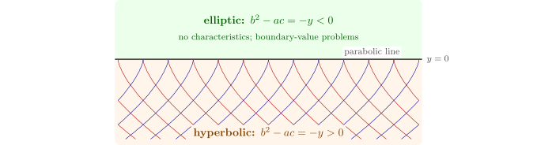

3.2 Characteristics and canonical forms
The coefficient \(A\) vanishes when \(\xi \) satisfies the characteristic equation \[ a\varphi _x^2 + 2b\varphi _x\varphi _y + c\varphi _y^2 = 0 . \] A level curve \(\varphi (x, y) = \text {const}\) of such a function is a characteristic curve. Along it \(dy/dx = -\varphi _x/\varphi _y\), and the characteristic equation becomes an ordinary differential equation for the slope \(m = dy/dx\): \[ a m^2 - 2b m + c = 0, \qquad m = \frac {b \pm \sqrt {b^2 - ac}}{a} . \] So a hyperbolic equation has two real families of characteristics, a parabolic equation one, and an elliptic equation none. As in Section 1, characteristics are the curves on which Cauchy data cannot be prescribed freely, and across which solutions may have discontinuities in their second derivatives; in the hyperbolic case they are the paths of waves.
Theorem 3.2.1 (Canonical forms). Near any point, equation (3.1) can be transformed into
- (i)
- \(u_{\xi \eta } + (\text {lower order}) = g\) if it is hyperbolic, taking \(\xi \) and \(\eta \) constant on the two families of characteristics; equivalently \(u_{\alpha \alpha } - u_{\beta \beta } + \ldots \) with \(\alpha = \xi + \eta \), \(\beta = \xi - \eta \);
- (ii)
- \(u_{\eta \eta } + (\text {lower order}) = g\) if it is parabolic, taking \(\xi \) constant on the characteristics and \(\eta \) any function with \(J \neq 0\);
- (iii)
- \(u_{\alpha \alpha } + u_{\beta \beta } + (\text {lower order}) = g\) if it is elliptic, with \(\alpha \), \(\beta \) the real and imaginary parts of a complex solution of the characteristic equation (assuming analytic coefficients; in general one solves a Beltrami equation).
Proof. (i) With \(\xi \) and \(\eta \) characteristic, \(A = C = 0\), and \(B \neq 0\) since \(B^2 = J^2(b^2 - ac) > 0\); divide by \(2B\). (ii) With \(\xi \) characteristic, \(A = 0\), so \(B^2 = AC + J^2(b^2 - ac) = 0\), and \(C \neq 0\) since otherwise the principal part would vanish; divide by \(C\). (iii) If \(\varphi = \alpha + i\beta \) satisfies the characteristic equation, then \(Q(\varphi ) = a\varphi _x^2 + 2b\varphi _x\varphi _y + c\varphi _y^2 = 0\), and separating real and imaginary parts, \[ Q(\alpha ) - Q(\beta ) = 0, \qquad a\alpha _x\beta _x + b(\alpha _x\beta _y + \alpha _y\beta _x) + c\alpha _y\beta _y = 0 , \] which say that the coefficients of \(u_{\alpha \alpha }\) and \(u_{\beta \beta }\) are equal and that of \(u_{\alpha \beta }\) is zero. □
Example 3.2.2. For \(u_{xx} + 4u_{xy} + 3u_{yy} = 0\), \(b^2 - ac = 4 - 3 = 1\): hyperbolic. The slopes solve \(m^2 - 4m + 3 = 0\), so \(m = 1\) and \(3\), and \(\xi = y - x\), \(\eta = y - 3x\) are constant on the characteristics. Then \(A = C = 0\) and \(B = 1\cdot 3 + 2(-1 - 3) + 3 = -2\), so the equation is \(-4u_{\xi \eta } = 0\), and integrating twice, \[ u = F(y - x) + G(y - 3x) \] for arbitrary \(F\) and \(G\): the sum of two waves, one on each family of characteristics.
Example 3.2.3 (The Tricomi equation). The type can change from point to point. For \(yu_{xx} + u_{yy} = 0\), \(b^2 - ac = -y\): the equation is elliptic in the upper half-plane, hyperbolic in the lower, and parabolic on the axis. In \(y < 0\) the slopes satisfy \(ym^2 + 1 = 0\), so \(dx/dy = \pm \sqrt {-y}\) and the characteristics are the cusped curves \[ x = x_0 \pm \tfrac 23(-y)^{3/2} \] (Figure 4). Tricomi (1923) studied it as the model of a mixed-type problem, and it describes the steady flow of a gas near the speed of sound, which is subsonic (elliptic) on one side of the sonic line and supersonic (hyperbolic) on the other.

Questions on this section
Stuck on something here? Ask below and it stays attached to this topic.